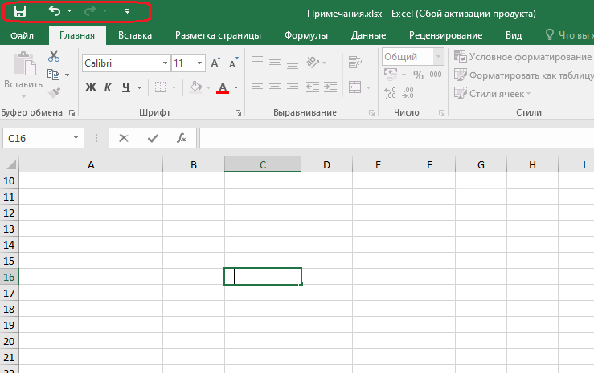
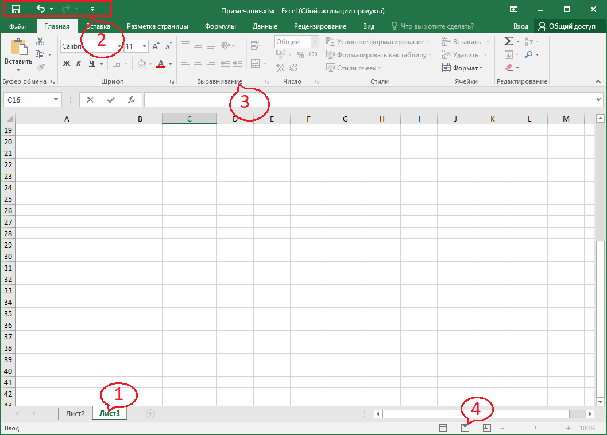
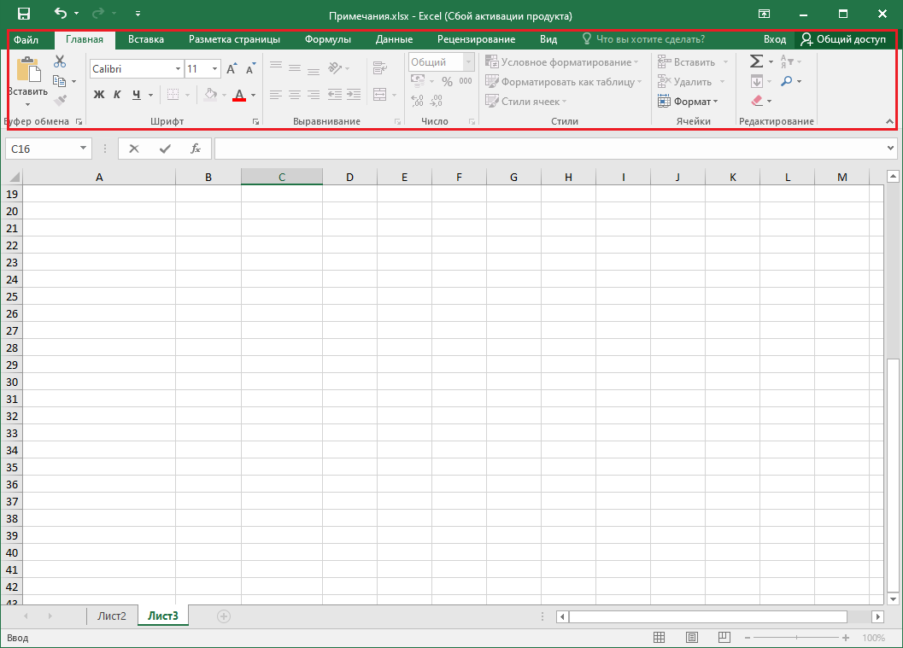
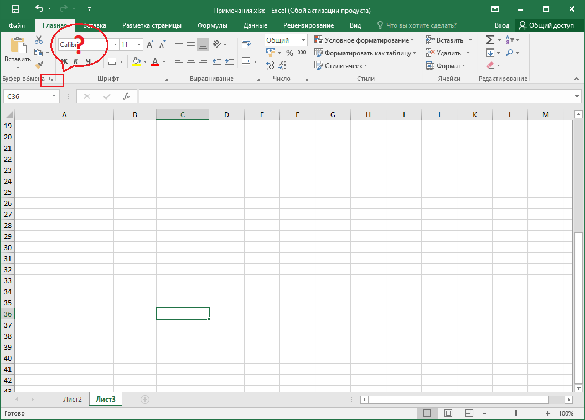
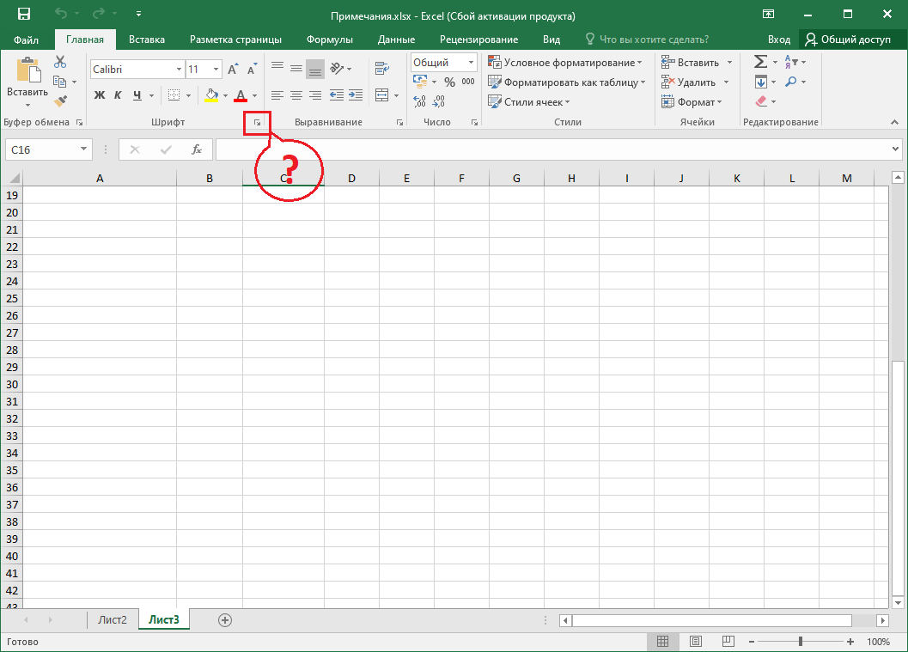

Тест №13
Выберите
один
правильный ответ. После ответа на все вопросы нажмите кнопку «Готово».
Как называют указанный элемент интерфейса Excel 2019?

лента
полоса
панель быстрого доступа
панель инструментов
Какой элемент интерфейса Excel называют "Панель быстрого доступа"?

1
2
3
4
Как можно добавить элемент управления на ленту вкладки?

нельзя никак. Содержание вкладки не может быть изменено
перетащить из другой вкладки при нажатой клавише Ctrl
в окне настройки "Параметры Excel"
перетащить из другой вкладки при нажатой клавише Alt
Для каких целей можно использовать указанный элемент?

для перемещения группы "Буфер обмена" в другую вкладку
для отображения области задач "Буфер обмена"
для настройки содержимого группы "Буфер обмена"
для перемещения группы "Буфер обмена" во вкладке "Главная"
Для какой цели используют указанный элемент строки формул?
для скрытия формул в строке формул
для увеличения высоты строки формул
для увеличения длины строки формул
для скрытия строки формул
Для каких целей можно использовать указанный элемент?

для перемещения группы "Шрифт" во вкладке "Главная"
для отображения диалогового окна "Формат Ячейки"
для настройки содержимого группы "Шрифт"
для перемещения группы "Шрифт" в другую вкладку